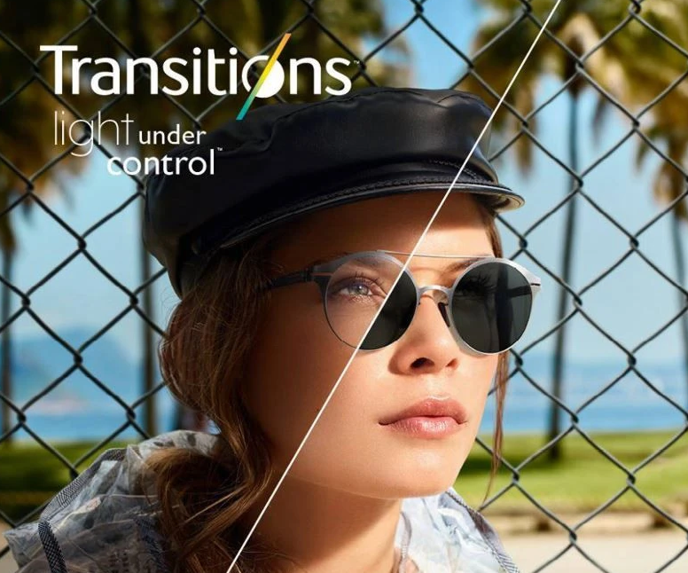

☀️
Na słońcu
Soczewki automatycznie przyciemniają się pod wpływem promieniowania UV.
Soczewki Transitions automatycznie przyciemniają się w słońcu i wracają do przezroczystości w pomieszczeniu. Zanim zdecydujesz się na zakup, możesz zobaczyć, jak działają — w wirtualnej przymierzalni producenta.

Soczewki fotochromowe dopasowują przyciemnienie do warunków oświetlenia — bez konieczności kupowania osobnych okularów przeciwsłonecznych.
Soczewki automatycznie przyciemniają się pod wpływem promieniowania UV.
Wewnątrz szybko wracają do pełnej przezroczystości.
Pełna ochrona przed promieniowaniem UV niezależnie od stopnia przyciemnienia.
Dobieramy soczewki Transitions do wybranej przez Ciebie oprawy korekcyjnej.